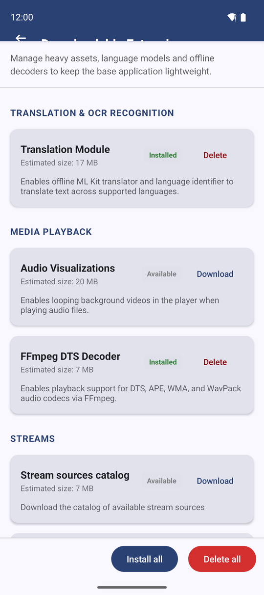
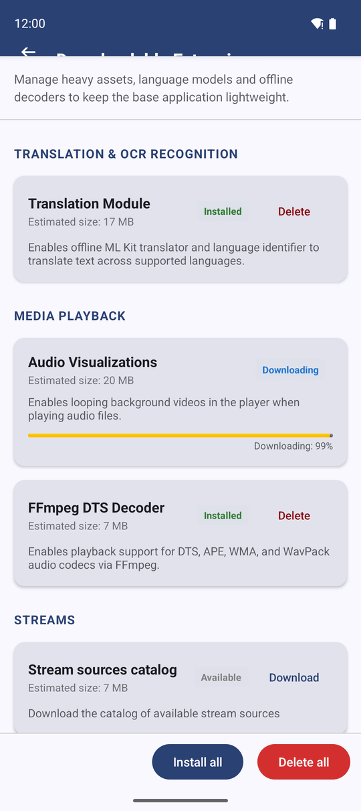
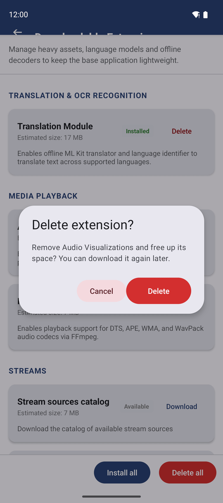

Downloadable Extensions - Add Features Only When You Need Them
Extensions are optional parts of FastMediaSorter that you download only when you need them: text recognition, extra audio formats, background videos and stream catalogs. This page shows how to download, update and delete them.
Why You'll Love This
Some parts of FastMediaSorter are big and only a few people need them: the engine that reads text in pictures, the models for Russian and Ukrainian letters, a decoder for rare audio formats, looping videos behind your music. Packing all of them into the app would make it heavier for everybody.
So these parts are extensions: you download each one only when you want it, and delete it again when you need the space. Until you download an extension, the rest of the app works exactly as before.
- ✓ FastMediaSorter in the Standard, noLegal, Legacy or VR edition. The Lite, Photos and FOSS editions have no extensions screen, because the features the extensions add are not part of those editions. See The seven editions.
- ✓ An internet connection. Wi-Fi is best: the largest extension is about 44 MB.
- ✓ Some free space on the phone. Each row of the screen shows how much the extension needs.
Open the Downloadable Extensions screen
Open Settings, stay on the General tab, and tap Downloadable Extensions. The screen opens with a short note at the top and a list of extensions below it, grouped under Translation & OCR recognition, Media playback and Streams.
There are two more ways to reach the same screen:
- Settings, the Media tab, the Translation, digitization (OCR) section, the row OCR & translation downloads.
- The page about features in the first-launch wizard.

Know what each extension adds
Each row has a name, a short description, the Estimated size and a status on the right: Available, Downloading, Installed, Failed or Update ready.
- OCR Engines - the text-recognition engine that reads text from pictures and documents without the internet. You need it for text recognition.
- Russian OCR Model and Ukrainian OCR Model - better recognition of Russian and Ukrainian text. Download the one for the language of your documents.
- Translation Module - translates recognized text between languages on the phone itself. See Translating extracted text.
- FFmpeg DTS Decoder - plays audio in the DTS, APE, WMA and WavPack formats, including the DTS sound track of many movies.
- Extended Video Playback - plays video files and disc images the built-in player cannot open.
- Audio Visualizations - looping background videos that the audio player shows behind a track that has no cover picture.
- Stream sources catalog, Channel preview atlas and Station logos - the list of Streams to choose from, and the pictures shown for them in the grid. See Browsing the channel catalog.
The screen shows only the extensions that your edition and your device can use. The OCR rows, for example, appear only on a device with a recent enough Android and enough memory to run text recognition. If a row you read about here is missing, your edition or your device does not have that feature.
Download an extension
Tap Download on the row you want. The status changes to Downloading and a progress bar with the percentage appears in the row, for example "Downloading: 40%". You can leave the screen: the download goes on, and the row shows the right status when you come back.
Before an extension is marked Installed, the app checks that the downloaded file is complete and exactly the one it expects. A broken or interrupted download ends as Failed; tap Download again to retry.
To get everything at once, tap Install all at the bottom of the screen. The app downloads every extension that is not installed yet.

You never have to download an extension. Without it, only the feature it adds is missing; everything else works as before. When you later try to use that feature, the app offers the download again.
Keep your extensions up to date
A downloaded extension stays until you delete it. It survives app updates, and it is not removed when you or the phone clear the app's cache.
Sometimes a newer copy of an extension is published - a better model, a longer catalog, fresh station logos. Then the status of its row changes to Update ready. The old copy keeps working until you tap Download to take the new one.
For the Streams rows, the size is measured on the file that is actually published, so the number you see is what you will download. Without an internet connection the row shows an estimate instead.
Delete extensions to free space
Tap Delete on an installed row. The app asks "Delete extension?" and explains that you can download it again later. Confirm, and the space is free again.
To remove all of them at once, tap Delete all at the bottom of the screen and confirm "Delete all extensions?".

Play video files the built-in player cannot open (noLegal edition only)
*Only in the noLegal edition, the sideload version installed from an APK file.*
The noLegal edition has one more row under Media playback: Extended Video Playback. It adds a second video engine that plays video files and disc images the built-in player cannot open. It is a one-time download of about 44 MB.
You can download it from this screen in advance, or simply open a video that does not play: the app then offers the same download on the spot.
What You Get
The app stays light, and you add exactly the extras you use - text recognition in your languages, rare audio formats, background videos, stream catalogs - and remove them again whenever you need the space.
Tips and Troubleshooting
- On mobile data? Download the large extensions later over Wi-Fi. Their size is shown in each row before you tap anything.
- Moving to another edition? Extensions are not part of a settings backup. Download them again in the new edition from the same screen. See The seven editions.
- Text recognition reads Cyrillic badly? Download the Russian OCR Model or the Ukrainian OCR Model - the basic engine alone recognizes those letters less accurately.